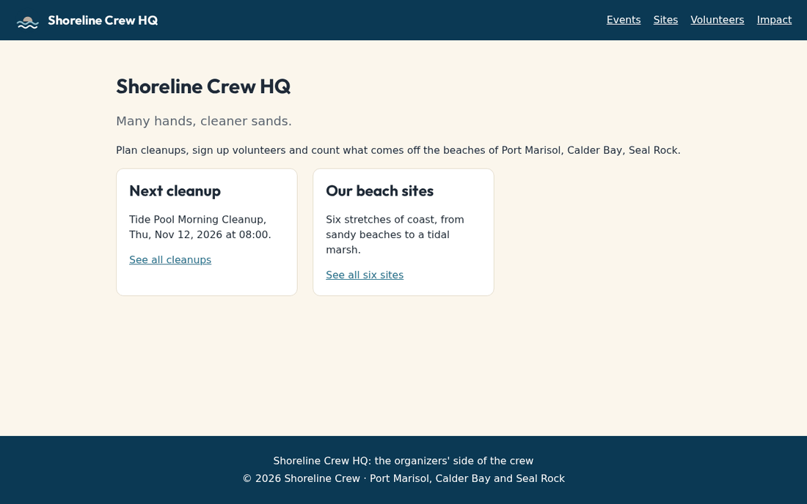
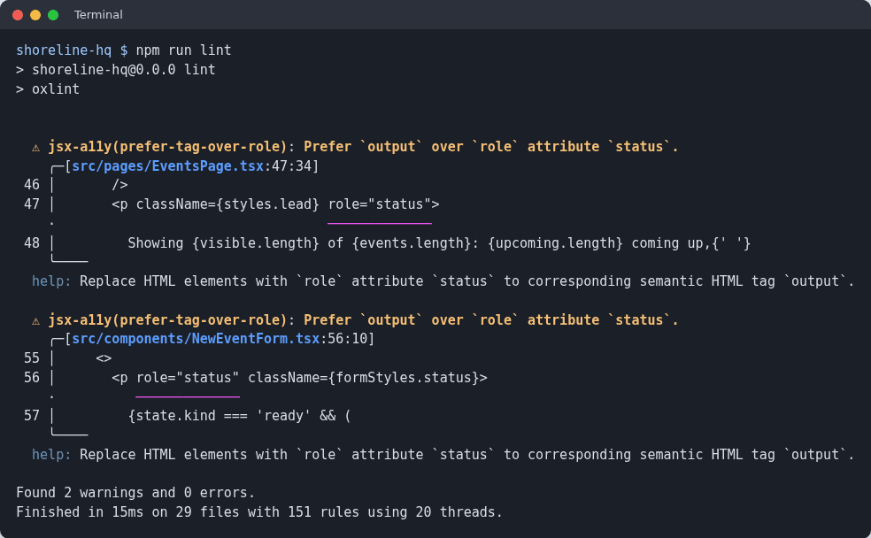
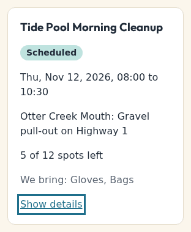

🎨 Lesson 3.6: Styling and Accessible Components
Shoreline Crew HQ has grown to three pages, a dozen components and one global stylesheet of more than 300 lines that every component reaches into. Today each component gets its own stylesheet, with class names nobody else can clash with and types TypeScript can read. The app gets the crew's font and a focus ring you can always see, and then you check it the way real teams do: with the linter, with the browser's audits, and with your own hands on the keyboard. Module 3 ends with an app that is tidy inside and works for everyone outside.
🎯 Learning Objectives
By the end of this lesson, you will be able to:
- Explain why one global stylesheet stops scaling, and how CSS Modules scope class names to a component
- Import a CSS Module in a typed component, combine classes, pick a variant from a union-typed prop, and read the
string | undefinedtype TypeScript gives each class - Use inline
styleobjects typed asCSSPropertiesfor values that come from data, and know when not to - Self-host a font, keep design tokens global, and give every focusable element a visible focus ring
- Check components for accessibility with the linter's
jsx-a11yrules, the browser's audits, and a keyboard pass, and fix what only a person notices
📦 Code for this lesson
Starting code: lesson-12-start.zip · Finished code: lesson-12-end.zip. Each folder has a README with the commands to run it. Copy .env.example to .env.local in shoreline-hq before npm run dev.
In This Lesson
🗂️ Where Styles Live
Open src/index.css. Since Lesson 3.1 every component's styles have gone into this one file: .site-header, .card, .badge-info, .field, .button-primary, more than 300 lines. That worked while the app was small. Look at what it costs now:
- One namespace for everything. Every class name in the file applies to the whole app. If a new component also calls something
.cardor.lead, the two rules mix, and nothing warns you. A rule like.card h3from Lesson 3.3 reaches into anyh3inside any element with that class, wherever it is. - No link between a component and its styles. Delete
SpotsLine.tsxand.spots-fullstays inindex.cssforever, because nobody can be sure no other component uses it. - Strings TypeScript cannot check.
className="badge-sucess"compiles. The badge is simply unstyled.
React itself has no opinion about styling, so teams pick one of a handful of approaches. You will meet all of them:
| Approach | What it looks like | Trade-offs |
|---|---|---|
| Global CSS | className="card", rules in one file | Nothing to learn; clashes and leftovers as the app grows |
| CSS Modules | className={styles.card}, a Card.module.css next to the component | Plain CSS, scoped automatically, built into Vite, nothing extra in the browser |
| Inline styles | style={{ width: '40%' }} | Typed and dynamic, but no :hover, :focus-visible or media queries |
| Utility classes (Tailwind) | className="p-4 rounded-lg bg-white" | Fast once learned, a build plugin and a vocabulary to learn, long class lists |
| CSS-in-JS (styled-components, Emotion) | Styles written in JavaScript template strings | Dynamic and colocated; most libraries add work in the browser at run time |
This course uses CSS Modules: you keep writing the CSS you know, Vite supports them with no install, and the browser receives an ordinary stylesheet. Everything you learn about scoping, tokens and focus carries over to whichever approach your next team uses.
💡 Mental model: crews with the same job titles
At a big cleanup day every beach has a "lead" and a "sweeper". Shout "lead!" on a shared radio channel and three people answer. So the radio says "Driftwood lead" and "Jetty lead": same job titles, never confused. CSS Modules do this for class names. You write .card in Card.module.css; the build turns it into a name that includes the file it came from, so no other .card anywhere can answer.
📦 CSS Modules in TypeScript
A module, step by step
Any CSS file whose name ends in .module.css is a CSS Module. Try one in shoreline-hq: create src/Scratch.module.css (your experiment files for this lesson):
.note {
padding: 0.75rem 1rem;
border-left: 4px solid var(--sunrise);
background: var(--surface);
}
.title {
margin: 0;
font-weight: 600;
}and src/Scratch.tsx:
import styles from './Scratch.module.css'
// A tide warning for the top of an event page
export function TideNote() {
return (
<aside className={styles.note}>
<p className={styles.title}>High tide at 11:40</p>
<p>Finish the lower beach first.</p>
</aside>
)
}To see it, import TideNote in App.tsx and temporarily make return <TideNote /> the first line of CurrentPage. With the dev server running, inspect the note in the browser (right-click, Inspect). The Elements panel shows:
The HTML React rendered (dev server)
<aside class="_note_1pozh_1">
<p class="_title_1pozh_7">High tide at 11:40</p>
<p>Finish the lower beach first.</p>
</aside>Three things happened:
import styles from './Scratch.module.css'gave you an object. Its keys are the class names you wrote, its values are the names the browser actually gets:styles.noteis"_note_1pozh_1".- Vite rewrote every class in the file the same way: an underscore, your name, a short code made from the file, and the line number. Your hash will differ; the shape is the same in the production build.
- The CSS itself is unchanged apart from the names, so
var(--sunrise)andvar(--surface)still come fromindex.css. Custom properties are inherited through the page, not scoped: the design tokens stay global and every module can use them.
What TypeScript knows about styles
TypeScript cannot read CSS files. The type comes from vite/client (the types entry in tsconfig.app.json you read in Lesson 2.4), which says every *.module.css file exports a CSSModuleClasses:
type CSSModuleClasses = { readonly [key: string]: string }That is an index signature: "any string key, string values". And since Lesson 2.4 the HQ has noUncheckedIndexedAccess on, so TypeScript treats styles.note, and every other class, as string | undefined. That is the honest answer: it does not know whether the class exists. Two consequences:
classNameacceptsstring | undefined, soclassName={styles.note}compiles. Where a plainstringis required, you get an error:
import styles from './Scratch.module.css'
// A helper that promises to return a string
function noteClass(): string {
return styles.note
}
export function TideNote() {
return <aside className={noteClass()}>High tide at 11:40</aside>
}Expected output (npx tsc -b)
src/Scratch.tsx:5:3 - error TS2322: Type 'string | undefined' is not assignable to type 'string'.
Type 'undefined' is not assignable to type 'string'.
5 return styles.note
~~~~~~
Found 1 error in src/Scratch.tsx:5- A misspelled class is not an error. Change
styles.notetostyles.ntoeinTideNote:npx tsc -bandnpm run lintboth pass, the note loses its border, and the Elements panel shows why:
The HTML React rendered (dev server)
<aside>
<p class="_title_1pozh_7">High tide at 11:40</p>
<p>Finish the lower beach first.</p>
</aside>styles.ntoe is undefined, and React leaves out a className that is undefined. In other words, CSS Modules make clashes impossible, but they do not make typos impossible. You catch those by looking at the page, and Exercise 3 shows how to let TypeScript catch them too.
Names, combinations and variants
- Use camelCase class names in modules:
.skipLink, not.skip-link.styles.skip-linkis "styles.skipminuslink" to JavaScript (Common Mistakes shows the four errors). - Name classes by their job inside the component:
.picture,.parking,.full. The file already says which component they belong to, so prefixes likesite-are no longer needed. - Combine classes with a template literal:
className={`${styles.badge} ${styles[tone]}`}. - Pick a variant with a typed prop.
Badge'stoneis the union'info' | 'success' | 'neutral' | 'danger', andBadge.module.csshas one class per member, sostyles[tone]is a lookup, like theRecordtables of Lesson 3.3. - Element selectors inside a class still work:
.card h2means "anyh2inside this module's.card". Plain element rules (h1,a) belong inindex.css, because they are about the whole page. - Sharing is importing. A CSS Module is a module: when
EventCardneeds the card look, it importsCard.module.cssunder a different name,cardStyles. A module that several components share, such as the project'sForm.module.css, is named for what it styles.
✏️ Inline Styles and CSSProperties
The style prop takes an object, not a string, and React's types describe it as CSSProperties: every CSS property in camelCase, with its allowed values. Numbers for lengths become pixels. Inline styles are the right tool when a value comes from data at run time, such as a bar as wide as the share of spots already taken:
import type { CSSProperties } from 'react'
interface SpotsBarProps {
taken: number
capacity: number
}
// The width comes from data, so it belongs in a style object, not in a class
export function SpotsBar({ taken, capacity }: SpotsBarProps) {
const fill: CSSProperties = {
width: `${Math.round((taken / capacity) * 100)}%`,
height: 8,
backgroundColor: 'var(--kelp)',
}
return <div style={fill} />
}height: 8 becomes 8px, and a token still works as a value. Annotating the object with CSSProperties makes TypeScript check it before it reaches the style prop. Write a property the CSS way:
import type { CSSProperties } from 'react'
const fill: CSSProperties = {
'background-color': 'var(--kelp)',
}
export function SpotsBar() {
return <div style={fill} />
}Expected output (npx tsc -b)
src/Scratch.tsx:4:3 - error TS2353: Object literal may only specify known properties, and ''background-color'' does not exist in type 'Properties<string | number, string & {}>'.
4 'background-color': 'var(--kelp)',
~~~~~~~~~~~~~~~~~~
Found 1 error in src/Scratch.tsx:4TS2353 is the excess property check from Lesson 2.2: CSSProperties knows backgroundColor, not 'background-color'. Use inline styles for values computed from data; use a class for everything else. A style object cannot express :hover, :focus-visible, dark mode or a media query, and a page full of inline styles is as hard to change as one big stylesheet.
🔤 Fonts, Tokens and Layout
The crew's font, self-hosted
Shoreline Crew's headings use Outfit, a free font (SIL Open Font License). The usual way to add a web font is a <link> to a font service, which means every visitor's browser contacts that service. The Fontsource packages put the font files in your project instead: one npm install, one import, and Vite copies the files into your build. Your app works offline, nobody else sees your visitors, and the font's version is in your lockfile like any other dependency.
The package's own CSS declares the font as 'Outfit Variable', a variable font: one file covers every weight from 100 to 900. It also says font-display: swap, so text appears at once in the fallback font and switches when Outfit arrives. You add the import in Step 1 of the project.
Tokens stay global
Moving component styles into modules does not mean everything moves. index.css keeps what is about the whole page: the brand colors and role tokens (--page, --text, --link, and their dark-mode values), the base font, plain element rules, and one rule every component needs: the focus ring. Because custom properties are inherited, a module can also set a token for everything inside it. The header does that in Step 2, so focus rings on its dark background are orange instead of teal.
Layout: the two tools the HQ uses
| Job in the HQ | Tool | Why it works on a phone |
|---|---|---|
| Header: logo left, links right; filters; form rows; buttons | Flexbox with flex-wrap: wrap and gap | Items move to the next line when there is no room |
| Cards on the home, sites and events pages | Grid with repeat(auto-fill, minmax(16rem, 1fr)) | As many 16rem columns as fit: one on a phone, three on a laptop |
| The page column | max-width: 60rem + margin: 0 auto | Lines stay readable on wide screens, full width on small ones |
| The whole app: footer at the bottom | #root as a flex column, main with flex: 1 | Short pages still push the footer down |
None of these needs a media query: the layouts adapt to the space they get. Reach for @media (width < 40rem) when something must change at a size, not just wrap.
♿ Accessible Components
An accessible component works for people who use it differently from you: with a keyboard instead of a mouse, with a screen reader that speaks the page, zoomed to 200%, in bright sunlight on a beach, with one hand while holding a bag of rubbish. Accessibility is part of quality, like types and tests, and in many countries public and commercial sites are legally required to meet the Web Content Accessibility Guidelines (WCAG). It is also simply more users: an organizer who cannot plan a cleanup in the HQ is an organizer the crew loses.
💡 Mental model: the step-free route
Every site in the API has an accessible flag: is there a step-free route to the beach? A ramp built with the stairs costs little; one added after the stairs are poured costs a lot. And everyone uses the ramp: strollers, wheelbarrows, the volunteer with the heavy cooler. Accessible components are the same. Built in from the start, they cost a <button> instead of a <div> and a label instead of a placeholder. Retrofitted, they cost a rewrite.
The HQ has followed most of these habits since Lesson 3.1. Here they are as a checklist, so you can apply them on purpose:
| Habit | In the HQ |
|---|---|
The right element first. Actions are <button>, navigation is <a href>, form controls are real inputs. They are focusable and work with Enter and Space for free. | "Show details" and "Clear filters" are buttons; the header links are links |
Landmarks and headings. header, nav, main, search, footer; one h1 per page, no skipped levels. Screen reader users jump by these. | Every page: h1, h2 groups, h3 per event card |
Every control has a name. Inputs get a <label htmlFor>, buttons get visible text. Names should make sense out of context: screen readers can list all buttons on a page. | Labels on every field (3.4, 3.5); the 15 "Show details" buttons are fixed in Step 6 |
Images: describe or hide. An image that carries information gets alt text that says what it shows. A decorative one, or one whose meaning is already in the text next to it, gets alt="". Never "image of". | The logo next to "Shoreline Crew HQ" has alt=""; site pictures use the API's image.alt |
Focus you can see. Never outline: none without a replacement. Tab order follows the order in the HTML; tabIndex is only ever 0 or -1. | A skip link (3.1); a brand focus ring in Step 1 |
| Contrast and not color alone. Text at least 4.5:1 against its background, focus rings and field borders at least 3:1. Errors say so in words, not only in red. | Brand tokens chosen for contrast; field errors are text plus a thicker border (3.5) |
State in the markup. aria-expanded, aria-invalid, aria-describedby, role="status" tell assistive technology what the screen shows. | Details toggle (3.4), form errors and status line (3.5) |
About ARIA, the attributes in the last row: they change what assistive technology is told, never what the element does. role="button" on a <div> does not make it focusable or respond to Enter. The first rule of ARIA, from the W3C itself, is not to use it when a native HTML element already does the job. No ARIA is better than wrong ARIA.
And focus, in CSS: :focus matches whenever an element has focus, including right after a mouse click. :focus-visible matches when the browser judges a focus ring helpful: always for keyboard focus and text fields, usually not after clicking a button. Use :focus-visible for the ring, as the project does.
🔍 Checking Accessibility
Accessibility problems are checked in layers, from cheap and automatic to slow and human:
1. The linter
oxlint, the linter Vite set up in Lesson 1.2, has a plugin called jsx-a11y ("a11y" is short for accessibility: a, 11 letters, y). It reads your TSX and knows the rules for HTML elements and ARIA. You switch it on in Step 6. Here is what it says about a component that many tutorials would call fine:
interface SiteTileProps {
name: string
imageUrl: string
onOpen: () => void
}
// Fine with a mouse. With a keyboard or a screen reader, it is a dead end.
export function SiteTile({ name, imageUrl, onOpen }: SiteTileProps) {
return (
<div onClick={onOpen}>
<img src={imageUrl} />
<span>{name}</span>
</div>
)
}Expected output (npm run lint, with the plugin on)
> shoreline-hq@0.0.0 lint
> oxlint
⚠ jsx-a11y(click-events-have-key-events): Enforce a clickable non-interactive element has at least one keyboard event listener.
╭─[src/Scratch.tsx:10:5]
9 │ return (
10 │ <div onClick={onOpen}>
· ──────────────────────
11 │ <img src={imageUrl} />
╰────
help: Visible, non-interactive elements with click handlers must have one of `keyup`, `keydown`, or `keypress` listener.
⚠ jsx-a11y(no-static-element-interactions): Static HTML elements with event handlers require a role.
╭─[src/Scratch.tsx:10:6]
9 │ return (
10 │ <div onClick={onOpen}>
· ───
11 │ <img src={imageUrl} />
╰────
help: Add a role attribute to this element, or use a semantic HTML element instead.
⚠ jsx-a11y(alt-text): Missing `alt` attribute.
╭─[src/Scratch.tsx:11:7]
10 │ <div onClick={onOpen}>
11 │ <img src={imageUrl} />
· ──────────────────────
12 │ <span>{name}</span>
╰────
help: Must have `alt` prop, either with meaningful text, or an empty string for decorative images.
Found 3 warnings and 0 errors.
Finished in 12ms on 31 files with 150 rules using 20 threads.Three warnings, and npx tsc -b has nothing to say: the types are fine. A <div> with onClick cannot be reached with Tab and does not respond to Enter, and a screen reader does not announce it as something you can press. The image has no alt, so a screen reader may read out its file name. The fix is not three attributes; it is the right element:
interface SiteTileProps {
name: string
imageUrl: string
onOpen: () => void
}
// A real button: focusable, works with Enter and Space, and its name is the site's name
export function SiteTile({ name, imageUrl, onOpen }: SiteTileProps) {
return (
<button type="button" onClick={onOpen}>
<img src={imageUrl} alt="" />
{name}
</button>
)
}Now npm run lint says Found 0 warnings and 0 errors. The button is focusable, works with Enter and Space, and its name is the site's name. The image is alt="" because the name is already there in text.
2. The browser's audits
Browsers can check a running page, which the linter cannot: colors, contrast, what is actually focusable. Two free tools are worth knowing; screenshots of DevTools are not possible in this course, so follow the steps in your own browser:
- Lighthouse, built into Chrome and Edge DevTools: open DevTools (F12, or ⌘ Cmd+Option+I on a Mac), choose the Lighthouse tab, tick only Accessibility, and press Analyze page load. You get a score and a list of failed checks, each with the elements involved and a "learn more" link.
- axe DevTools, a free browser extension from Deque (Chrome, Edge and Firefox), adds an axe DevTools tab that scans the page and explains each issue. It uses axe-core, the same engine you will run in automated tests in Lesson 9.3. A paid version adds guided tests; the free scan is all this course needs.
DevTools also shows the accessibility tree, the version of the page that screen readers get: in Chrome's Elements panel, select an element and open the Accessibility pane next to Styles to see its role and its computed name. Its color picker shows the contrast ratio of a text color against its background.
3. You
Automated tools are a floor, not a ceiling. They find problems that can be decided by a rule (a missing label, low contrast), and only some of all problems. They cannot tell whether an alt text describes the picture, whether the order of things makes sense, or whether 15 buttons with the same name are usable. Two quick human checks find most of the rest:
- A keyboard pass. Put the mouse aside. Tab through the page, Shift+Tab back, Enter and Space to activate. Can you always see where you are? Can you reach and use everything? Is the order sensible?
- A screen reader, for one task. NVDA is free on Windows; VoiceOver is built into macOS (⌘ Cmd+F5 turns it on and off). Ten minutes of planning a cleanup with your eyes closed teaches more than any checklist.
💡 Why this matters
Accessibility work shows up in job descriptions, design reviews and, for public organizations and many businesses, legal requirements. Developers who can say "I checked it with the keyboard and a screen reader, here is what I fixed" are rare and valued. And the habits are cheap once they are habits: the HQ needed almost no changes today because it has used the right elements since Lesson 3.1.
⚠️ Common Mistakes
⚠️ Moving the CSS but not the className
During the move, you cut a rule from index.css into a module and forget to change the component. className="badge badge-info" is still a valid string, so npx tsc -b and npm run lint both pass, and the browser renders <span class="badge badge-info">Port Marisol</span>: a class with no rule behind it, so the badge has no background at all. After the move, search the project for className=" (Ctrl+Shift+F, ⌘ Cmd+Shift+F on a Mac): no results means nothing was missed.
⚠️ Dashes in a module's class names
Keep .skip-link in a module and write className={styles.skip-link}:
Expected output (npx tsc -b, trimmed)
13 <a className={styles.skip-link} href="#main">
~~~~~~~~~~~
src/components/AppLayout.tsx:13:21 - error TS18048: 'styles.skip' is possibly 'undefined'.
13 <a className={styles.skip-link} href="#main">
~~~~~~~~~~~
src/components/AppLayout.tsx:13:33 - error TS2304: Cannot find name 'link'.
13 <a className={styles.skip-link} href="#main">
~~~~
Found 4 errors in the same file, starting at: src/components/AppLayout.tsx:13Four errors from one line, because JavaScript read it as styles.skip - link: a subtraction, a variable called link that does not exist, and a number where className wants a string. styles['skip-link'] would work, but camelCase names (.skipLink) keep the dot.
⚠️ Forgetting .module in the file name
Only files named *.module.css are CSS Modules. Name the file Card.css and import it the same way, and TypeScript notices:
Expected output (npx tsc -b)
src/components/Card.tsx:11:32 - error TS2339: Property 'card' does not exist on type 'typeof import("*.css")'.
11 <section className={styles.card}>
~~~~
Found 1 error in src/components/Card.tsx:11A plain .css import is global CSS with no class names to hand back. Rename the file to Card.module.css and fix the import.
⚠️ outline: none
A focus ring can look out of place in a design, and outline: none makes it go away for everyone, including the keyboard users who navigate by it. Neither tool warns you. If a ring looks wrong, restyle it (color, offset, thickness); never remove it.
🛠️ Project: A Styled, Accessible HQ
Today's project changes how the HQ is built more than what it shows: at the end, index.css holds only tokens and page-wide rules, every component imports its own module, headings use Outfit, focus is always visible, and the linter checks accessibility on every run. Then you check the app as a keyboard user would and fix the one problem the tools miss.
Start both servers (node server.ts in shoreline-api, npm run dev in shoreline-hq) and delete src/Scratch.tsx and src/Scratch.module.css (and the TideNote lines in App.tsx) if you still have them. The pattern for every component is the same, so after the first two it goes quickly:
- Create
Name.module.cssnext toName.tsx. - Cut the component's rules out of
index.cssand paste them in, renaming each class to a short camelCase name. - In the component,
import styles from './Name.module.css'and change eachclassName="…"toclassName={styles.…}. - Look at the page: it should look exactly as before.
Step 1: The crew's font and one focus ring (8 min)
Install the font package in shoreline-hq (this course was checked with version 5.3.0):
npm install @fontsource-variable/outfitIt is added to dependencies in package.json:
"dependencies": {
+ "@fontsource-variable/outfit": "^5.3.0",
"react": "^19.3.1",Import it once, in src/main.tsx, before your own CSS. Change these lines:
import { createRoot } from 'react-dom/client'
+import '@fontsource-variable/outfit'
import './index.css'An import with no names is a side-effect import: it runs a file for what it does (here, adding the @font-face rules) rather than for what it exports. The package ships its own small type declaration, so TypeScript accepts it. Now two page-wide rules in src/index.css. A focus token next to the other role tokens in :root:
--error: var(--coral);
+ --focus: var(--link);And after the a rule, the headings' font and the focus ring:
a {
color: var(--link);
}
+
+h1,
+h2,
+h3 {
+ font-family: 'Outfit Variable', system-ui, sans-serif;
+ line-height: 1.2;
+}
+
+/* One focus ring for everything you can reach with the keyboard */
+:focus-visible {
+ outline: 3px solid var(--focus);
+ outline-offset: 2px;
+}--focus: var(--link)follows the link color, so it is Sea Teal on the light page and light teal in dark mode with no extra line: the dark-mode block already changes--link.- The ring is 3 pixels with a 2-pixel gap, so it never sits on top of the element's own border. Sea Teal on Sand is 5.26:1, comfortably above the 3:1 a focus indicator needs.
system-ui, sans-serifafter Outfit are the fallbacks used until the font has loaded.
Save and look at the home page: the headings change shape. Press Tab a few times and the ring appears on each link.
Step 2: The shell: layout, header, footer (10 min)
Create src/components/AppLayout.module.css and move the .skip-link and .page rules into it (cut them from index.css), renaming .skip-link to .skipLink:
/* Hidden until a keyboard user tabs to it */
.skipLink {
position: absolute;
top: -4rem;
left: 1rem;
padding: 0.5rem 1rem;
background: var(--sunrise);
color: var(--ink);
}
.skipLink:focus {
top: 1rem;
}
.page {
flex: 1;
width: 100%;
max-width: 60rem;
margin: 0 auto;
padding: 2rem 1.5rem;
box-sizing: border-box;
}Then use it in src/components/AppLayout.tsx. Change these lines:
import type { ReactNode } from 'react'
+import styles from './AppLayout.module.css'
import { Footer } from './Footer.tsx'- <a className="skip-link" href="#main">
+ <a className={styles.skipLink} href="#main">- <main id="main" className="page">
+ <main id="main" className={styles.page}>The id="main" stays: the skip link points at it, and an id is not a class, so modules never rename it. Next the header. Create src/components/Header.module.css from the .site-header, .brand and .site-nav rules, with two additions marked by the first comment and the font-family line:
.header {
/* Teal would vanish on Deep Tide: inside the header, the focus ring is Sunrise */
--focus: var(--sunrise);
display: flex;
flex-wrap: wrap;
align-items: center;
justify-content: space-between;
gap: 0.75rem 2rem;
padding: 0.75rem 1.5rem;
background: var(--deep-tide);
color: var(--white);
}
.brand {
display: flex;
align-items: center;
gap: 0.75rem;
color: inherit;
font-family: 'Outfit Variable', system-ui, sans-serif;
font-size: 1.25rem;
font-weight: 700;
text-decoration: none;
}
.nav ul {
display: flex;
flex-wrap: wrap;
gap: 0.25rem 1.25rem;
margin: 0;
padding: 0;
list-style: none;
}
.nav a {
color: var(--white);
}import logoUrl from '../assets/logo.svg'
import styles from './Header.module.css'
export function Header() {
return (
<header className={styles.header}>
<a className={styles.brand} href="/">
<img src={logoUrl} alt="" width={40} height={40} />
<span>Shoreline Crew HQ</span>
</a>
<nav className={styles.nav} aria-label="Main">
<ul>
<li><a href="/events">Events</a></li>
<li><a href="/sites">Sites</a></li>
<li><a href="/volunteers">Volunteers</a></li>
<li><a href="/impact">Impact</a></li>
</ul>
</nav>
</header>
)
}--focus: var(--sunrise)on.header: Sea Teal on Deep Tide would be nearly invisible. Setting the token on the header changes it for every element inside, and the global:focus-visiblerule picks it up. No second focus rule needed.- The wordmark is not a heading, so it gets Outfit by name.
.nav uland.nav astyle plain elements inside the module's class: the list and links need no classes of their own.
And the footer: src/components/Footer.module.css from .site-footer:
.footer {
padding: 1.5rem;
background: var(--deep-tide);
color: var(--white);
text-align: center;
}
.footer p {
margin: 0.25rem 0;
}+import styles from './Footer.module.css'
+
// Read once, when the app loads: rendering itself stays pure- <footer className="site-footer">
+ <footer className={styles.footer}>Press Tab four times on the home page: skip link, logo, Events, Sites.

--focus for everything inside it.Step 3: Pages, cards and badges (14 min)
Four pages use .lead, and two use .card-grid. Styles shared by the page components get one module in their folder, src/pages/Page.module.css:
/* Shared by the page components */
.lead {
color: var(--text-muted);
font-size: 1.25rem;
}
/* As many 16rem columns as fit: one on a phone, three on a laptop */
.grid {
display: grid;
grid-template-columns: repeat(auto-fill, minmax(16rem, 1fr));
gap: 1.5rem;
}In each of the four pages, import it and replace the class names. HomePage.tsx shows the pattern:
import { formatDate } from '../utils/format.ts'
+import styles from './Page.module.css'- <p className="lead">{tagline}</p>
+ <p className={styles.lead}>{tagline}</p>- <div className="card-grid">
+ <div className={styles.grid}>Do the same in SitesPage.tsx (.lead and .card-grid), NewEventPage.tsx (.lead) and EventsPage.tsx, where the status line keeps its role:
- <p className="lead" role="status">
+ <p className={styles.lead} role="status">Next the card. src/components/Card.module.css takes .card, .card h2 and .card h3 (the event cards use h3 and will import this module too, in Step 4):
.card {
padding: 1.25rem;
border: 1px solid var(--border);
border-radius: 0.75rem;
background: var(--surface);
}
.card h2,
.card h3 {
margin-top: 0;
}import type { ReactNode } from 'react'
import styles from './Card.module.css'
interface CardProps {
title: string
children: ReactNode
}
export function Card({ title, children }: CardProps) {
return (
<section className={styles.card}>
<h2>{title}</h2>
{children}
</section>
)
}The badge is where TypeScript helps. src/components/Badge.module.css gets one class per tone, named exactly like the members of BadgeTone:
.badge {
padding: 0.125rem 0.625rem;
border-radius: 999px;
font-size: 0.875rem;
font-weight: 600;
}
/* One class per BadgeTone */
.info {
background: var(--seafoam);
color: var(--ink);
}
.success {
background: var(--kelp);
color: var(--white);
}
.neutral {
border: 1px solid var(--text-muted);
color: var(--text);
}
.danger {
background: var(--coral);
color: var(--white);
}import styles from './Badge.module.css'
export type BadgeTone = 'info' | 'success' | 'neutral' | 'danger'
interface BadgeProps {
label: string
tone?: BadgeTone
}
export function Badge({ label, tone = 'info' }: BadgeProps) {
return <span className={`${styles.badge} ${styles[tone]}`}>{label}</span>
}styles[tone] reads the class whose name is the tone. The old code built a string, `badge-${tone}`; now the tone itself is the key. Inspect a badge on the sites page and you see both classes, in the dev server and in the production build alike:
The HTML React rendered (dev server and npm run preview)
<span class="_badge_1nzko_1 _info_1nzko_9">Port Marisol</span>The picture and the site card follow the pattern. Note the new names: inside SiteCard.module.css, the muted parking line is .parking, because a module names things by their job:
.picture {
display: block;
width: 100%;
height: auto;
border-radius: 0.5rem;
} import type { Site } from '../api/types.ts'
+import styles from './SitePicture.module.css'- className="site-picture"
+ className={styles.picture}.badges {
display: flex;
flex-wrap: wrap;
gap: 0.5rem;
}
.parking {
color: var(--text-muted);
} import { Card } from './Card.tsx'
+import styles from './SiteCard.module.css'
import { SitePicture } from './SitePicture.tsx'- <p className="badges">
+ <p className={styles.badges}>- <p className="muted">Parking: {site.parking}</p>
+ <p className={styles.parking}>Parking: {site.parking}</p>Check the home and sites pages: they should look exactly as before, except for the font.

Step 4: The events list (10 min)
src/components/EventList.module.css takes .event-list and .empty-state, renamed .list and .empty; src/components/SpotsLine.module.css takes .spots-full as .full:
.list {
display: grid;
grid-template-columns: repeat(auto-fill, minmax(16rem, 1fr));
gap: 1.5rem;
margin: 0 0 2rem;
padding: 0;
list-style: none;
}
.empty {
margin: 0 0 2rem;
padding: 1rem 1.25rem;
border: 1px dashed var(--border);
border-radius: 0.75rem;
color: var(--text-muted);
}import type { CleanupEvent } from '../api/types.ts'
import { EventCard } from './EventCard.tsx'
import styles from './EventList.module.css'
interface EventListProps {
events: CleanupEvent[]
emptyMessage: string
}
export function EventList({ events, emptyMessage }: EventListProps) {
if (events.length === 0) {
return <p className={styles.empty}>{emptyMessage}</p>
}
return (
<ul className={styles.list}>
{events.map((event) => (
<li key={event.id}>
<EventCard event={event} />
</li>
))}
</ul>
)
}.full {
font-weight: 600;
} import type { Availability } from '../utils/availability.ts'
+import styles from './SpotsLine.module.css'- return <p className="spots-full">Full: new sign-ups join the waiting list</p>
+ return <p className={styles.full}>Full: new sign-ups join the waiting list</p>The event card is an <article> with an h3, not the Card component, but it should look like one. So it imports Card.module.css as cardStyles, and its own module, src/components/EventCard.module.css, holds what only it needs: the badges row, the supplies line (.muted before) and the details toggle (.button-link before):
.badges {
display: flex;
flex-wrap: wrap;
gap: 0.5rem;
}
.supplies {
color: var(--text-muted);
}
/* A button that looks like a link: it shows and hides, it does not go anywhere */
.toggle {
padding: 0;
border: none;
background: none;
color: var(--link);
font: inherit;
text-decoration: underline;
cursor: pointer;
} import { formatDate } from '../utils/format.ts'
+import cardStyles from './Card.module.css'
+import styles from './EventCard.module.css'
import { SpotsLine } from './SpotsLine.tsx'- <article className="card event-card">
+ <article className={cardStyles.card}>
<h3>{event.title}</h3>
- <p className="badges">
+ <p className={styles.badges}>- <p className="muted">We bring: {event.suppliesProvided.join(', ')}</p>
+ <p className={styles.supplies}>We bring: {event.suppliesProvided.join(', ')}</p>- className="button-link"
+ className={styles.toggle}The event-card class had no rule at all, so it simply goes. Yes, .badges now exists in two modules (SiteCard and EventCard): three lines repeated is the price of components you can change one at a time. When a shared piece grows, it deserves its own component or module.
Step 5: Forms and buttons (10 min)
The fields, rows and error messages are shared by both forms, and the two button looks by both forms too. They get shared modules named for what they style. src/components/Form.module.css collects .event-form (now .form), .field and its input rules, .form-row, .field-error, .form-actions and .form-status:
/* Shared by every form: the events filters and the Plan a cleanup form */
.form {
display: flex;
flex-direction: column;
gap: 1.25rem;
max-width: 40rem;
}
.field {
display: flex;
flex-direction: column;
gap: 0.25rem;
font-weight: 600;
}
.field input,
.field select,
.field textarea {
min-width: 14rem;
padding: 0.5rem 0.75rem;
border: 1px solid var(--text-muted);
border-radius: 0.5rem;
background: var(--surface);
color: var(--text);
font: inherit;
font-weight: 400;
}
.field [aria-invalid='true'] {
border: 2px solid var(--error);
}
.row {
display: flex;
flex-wrap: wrap;
gap: 1.25rem 1.5rem;
}
.row .field input {
min-width: 10rem;
}
.error {
margin: 0;
color: var(--error);
font-weight: 400;
}
.actions {
display: flex;
flex-wrap: wrap;
gap: 1rem;
}
.status {
padding: 0.75rem 1rem;
border-left: 4px solid var(--link);
background: var(--surface);
}
/* Kept in the page while empty, so screen readers notice when a message arrives */
.status:empty {
padding: 0;
border: 0;
}src/components/Button.module.css takes .button-primary and .button-secondary, with their shared declarations written once (Lesson 5.4 turns this into a Button component):
/* The app's two button looks */
.primary,
.secondary {
padding: 0.5rem 1rem;
border: 1px solid var(--link);
border-radius: 0.5rem;
font: inherit;
font-weight: 600;
cursor: pointer;
}
.primary {
background: var(--link);
color: var(--page);
}
.secondary {
background: transparent;
color: var(--link);
}And src/components/EventFilters.module.css keeps the filter bar's own layout:
.filters {
display: flex;
flex-wrap: wrap;
align-items: flex-end;
gap: 1rem 1.5rem;
margin-bottom: 1rem;
}EventFilters uses all three. Change its imports and class names:
import type { EventStatus } from '../api/types.ts'
+import buttonStyles from './Button.module.css'
+import styles from './EventFilters.module.css'
+import formStyles from './Form.module.css'- <search className="filters">
- <div className="field">
+ <search className={styles.filters}>
+ <div className={formStyles.field}>- <button type="button" className="button-secondary" onClick={onClear}>
+ <button type="button" className={buttonStyles.secondary} onClick={onClear}>(The second className="field" changes the same way.) FieldError imports the shared module:
import formStyles from './Form.module.css'
interface FieldErrorProps {
id: string
messages: string[] | undefined
}
// The message under a field. The field points at it with aria-describedby.
export function FieldError({ id, messages }: FieldErrorProps) {
if (messages === undefined) {
return null
}
return (
<p id={id} className={formStyles.error}>
{messages.join(' ')}
</p>
)
}And NewEventForm.tsx. Its eight className="field" are a job for find and replace (Ctrl+H, ⌘ Cmd+Option+F on a Mac): replace className="field" with className={formStyles.field}. The rest by hand:
import { formatDate, toDateString } from '../utils/format.ts'
+import buttonStyles from './Button.module.css'
import { FieldError } from './FieldError.tsx'
+import formStyles from './Form.module.css'- <p role="status" className="form-status">
+ <p role="status" className={formStyles.status}>- <form action={formAction} noValidate className="event-form">
+ <form action={formAction} noValidate className={formStyles.form}>- <div className="form-row">
+ <div className={formStyles.row}>- <div className="form-actions">
+ <div className={formStyles.actions}>And in the two buttons, className="button-secondary" becomes className={buttonStyles.secondary} and className="button-primary" becomes className={buttonStyles.primary}. Now index.css should hold nothing but tokens and page-wide rules. Update its first comment, and compare it with this, the whole file:
/* Shoreline Crew HQ: the crew's colors and base styles (Lesson 3.1).
Since Lesson 3.6 each component's own styles live in its CSS Module. */
:root {
/* Brand colors */
--deep-tide: #0b3954;
--sea-teal: #1f6f8b;
--sunrise: #f4a259;
--sand: #fbf6ec;
--seafoam: #bfe3df;
--kelp: #2d6a4f;
--coral: #b23a22;
--ink: #1f2a37;
--muted: #5b6573;
--white: #ffffff;
/* What the page uses: these change in dark mode */
--page: var(--sand);
--text: var(--ink);
--text-muted: var(--muted);
--link: var(--sea-teal);
--surface: var(--white);
--border: #e4dccb;
--error: var(--coral);
--focus: var(--link);
color-scheme: light dark;
font-family: system-ui, 'Segoe UI', Roboto, sans-serif;
line-height: 1.5;
color: var(--text);
background: var(--page);
}
@media (prefers-color-scheme: dark) {
:root {
--page: #0f1b26;
--text: #e9eef3;
--text-muted: #a9b4c0;
--link: #7cc6d6;
--surface: #16283a;
--border: #2b4257;
--error: #ff9b85;
}
}
body {
margin: 0;
}
#root {
display: flex;
flex-direction: column;
min-height: 100vh;
}
a {
color: var(--link);
}
h1,
h2,
h3 {
font-family: 'Outfit Variable', system-ui, sans-serif;
line-height: 1.2;
}
/* One focus ring for everything you can reach with the keyboard */
:focus-visible {
outline: 3px solid var(--focus);
outline-offset: 2px;
}From 324 lines to 71. Search the project for className=": there should be no results. Click through every page in light and dark mode, and use the "Plan a cleanup" form once with mistakes, to see the error styles.
Step 6: Check it like a keyboard user (12 min)
The linter. Switch on the accessibility plugin in .oxlintrc.json:
- "plugins": ["react", "typescript", "oxc"],
+ "plugins": ["react", "typescript", "oxc", "jsx-a11y"],and run npm run lint:

Expected output (npm run lint)
> shoreline-hq@0.0.0 lint
> oxlint
⚠ jsx-a11y(prefer-tag-over-role): Prefer `output` over `role` attribute `status`.
╭─[src/pages/EventsPage.tsx:47:34]
46 │ />
47 │ <p className={styles.lead} role="status">
· ─────────────
48 │ Showing {visible.length} of {events.length}: {upcoming.length} coming up,{' '}
╰────
help: Replace HTML elements with `role` attribute `status` to corresponding semantic HTML tag `output`.
⚠ jsx-a11y(prefer-tag-over-role): Prefer `output` over `role` attribute `status`.
╭─[src/components/NewEventForm.tsx:56:10]
55 │ <>
56 │ <p role="status" className={formStyles.status}>
· ─────────────
57 │ {state.kind === 'ready' && (
╰────
help: Replace HTML elements with `role` attribute `status` to corresponding semantic HTML tag `output`.
Found 2 warnings and 0 errors.
Finished in 11ms on 29 files with 151 rules using 20 threads.The last line's rule count went from 116 to 151: 35 accessibility rules are now on, and they found the two status lines from Lessons 3.4 and 3.5. The rule's advice is sound in general: <output> is an HTML element whose built-in role is status, and native elements beat ARIA. Here we keep role="status" on a <p> anyway: it is the long-established pattern for a status message, screen readers have supported it the longest, and <output> is meant for the result of a calculation. A lint rule is advice from people who thought hard about a problem; when you have a reason to disagree, turn it off and write the reason down. oxlint allows comments in its config:
{
"$schema": "./node_modules/oxlint/configuration_schema.json",
"plugins": ["react", "typescript", "oxc", "jsx-a11y"],
"rules": {
"react/rules-of-hooks": "error",
"react/only-export-components": ["warn", { "allowConstantExport": true }],
// We keep role="status" on a <p>: the pattern screen readers have supported longest
"jsx-a11y/prefer-tag-over-role": "off"
}
}npm run lint is back to Found 0 warnings and 0 errors., and from now on every lint run checks accessibility, in the terminal and in VS Code if you use the Oxc extension.
The keyboard pass. On the home page, put the mouse aside and press Tab repeatedly. Focus goes: skip link, the logo link, Events, Sites, Volunteers, Impact, then the two card links. The ring is orange in the header and teal on the page. On /events, keep pressing Tab through the filters and into the cards:

Everything is reachable and visible. But imagine hearing the page instead of seeing it. Screen readers can list every button on a page, and this one would read: "Show details, Show details, Show details", fifteen times. Each button only makes sense next to its card's heading. No tool flagged this, because each button has a name; it is just not a useful one. The fix is text that screen readers read but that takes no room on screen. Create src/components/VisuallyHidden.module.css:
/* In the page for screen readers, but not drawn on screen */
.hidden {
position: absolute;
width: 1px;
height: 1px;
margin: -1px;
padding: 0;
overflow: hidden;
clip-path: inset(50%);
white-space: nowrap;
border: 0;
}and a small component to use it, src/components/VisuallyHidden.tsx:
import type { ReactNode } from 'react'
import styles from './VisuallyHidden.module.css'
interface VisuallyHiddenProps {
children: ReactNode
}
// Text that screen readers read out, but that takes no room on screen
export function VisuallyHidden({ children }: VisuallyHiddenProps) {
return <span className={styles.hidden}>{children}</span>
}The text is still in the page (so it is in the accessibility tree), squeezed into a clipped 1 by 1 pixel box. display: none would not work: that hides text from screen readers too. Use it in EventCard.tsx:
import { StatusBadge } from './StatusBadge.tsx'
+import { VisuallyHidden } from './VisuallyHidden.tsx' {showDetails ? 'Hide details' : 'Show details'}
+ <VisuallyHidden> for {event.title}</VisuallyHidden>
</button>The card looks exactly the same. Select a "Show details" button in the Elements panel and open the Accessibility pane: its name is now Show details for Tide Pool Morning Cleanup, and every one of the fifteen names is different. The visible words still come first, so someone using voice control can still say "click Show details".
The browser's audit. Run Lighthouse's Accessibility check (or an axe DevTools scan) on the home, events, sites and "Plan a cleanup" pages, in light and dark mode. The course's own checks run axe-core on every page of the HQ and find no serious or critical problems; if your tool reports something, read its explanation, fix it, and run it again.
The build. Finally:
npx tsc -b
npm run lint
npm run buildExpected output (npm run build)
> shoreline-hq@0.0.0 build
> tsc -b && vite build
vite v8.3.8 building client environment for production...
✓ 58 modules transformed.
computing gzip size...
dist/index.html 0.46 kB │ gzip: 0.30 kB
dist/assets/outfit-latin-ext-wght-normal-DdQaqQDo.woff2 14.80 kB
dist/assets/outfit-latin-wght-normal-Bc-8i84L.woff2 32.29 kB
dist/assets/index-B3WlSEuu.css 5.24 kB │ gzip: 1.90 kB
dist/assets/index-D-nxy1wm.js 245.00 kB │ gzip: 75.95 kB
✓ built in 122msTwo new files: the Outfit font in two pieces (the latin file is used for English text, latin-ext only for accented letters beyond it), copied from the package with a hash in the name. All the modules became one CSS file, as before. (Times, sizes and hashes will differ.)

index.css, so dark mode and the phone layout carried over without a single change.Your own project: for your Lesson 11.1 app, choose a styling approach and write one sentence on why. List its design tokens (four to eight colors with their roles), and write a five-line accessibility checklist you will run before you call a screen finished.
✅ Project Completion Checklist
- ☐
src/index.cssholds only tokens, dark-mode values and page-wide rules, including the:focus-visiblering - ☐ Every component that has styles imports its own module (or a shared one:
Page,Card,Form,Button), and searching forclassName="finds nothing - ☐ Headings use Outfit, installed from npm, and every page looks as it did in light and dark mode
- ☐ Tab shows an orange ring in the header and a teal one on the page, on every link, field and button
- ☐
npm run lintruns thejsx-a11yrules, with the one rule turned off and the reason written next to it - ☐ Each "Show details" button has its own name, with the event's title in visually hidden text
- ☐
npx tsc -b,npm run lintandnpm run buildpass, andsrc/Scratch.*is deleted
🏋️ Hands-on Exercises
Exercises 1 and 2 are part of the lesson (about 15 minutes together, included in the lesson time).
🏋️ Exercise 1: You are here
Make the header show which page you are on, for everyone. Screen readers announce aria-current="page" on a link as "current page"; style the same attribute so sighted users see it too (bolder, with a thick underline). Header needs to know the address: read it once at module level, as App.tsx does. Then check /sites and /events/new.
💡 Hint
Turn the four links into an array of { href, label } objects and map over it (Lesson 3.3), so the comparison is written once. React leaves out an attribute whose value is undefined. In the module, .nav a[aria-current='page'] selects it, like the [aria-invalid='true'] rule in Lesson 3.5.
✅ Solution
import logoUrl from '../assets/logo.svg'
import styles from './Header.module.css'
// Temporary, like the page switch in App.tsx: React Router's NavLink does this for you in Lesson 6.1
const path = window.location.pathname
const links = [
{ href: '/events', label: 'Events' },
{ href: '/sites', label: 'Sites' },
{ href: '/volunteers', label: 'Volunteers' },
{ href: '/impact', label: 'Impact' },
]
export function Header() {
return (
<header className={styles.header}>
<a className={styles.brand} href="/">
<img src={logoUrl} alt="" width={40} height={40} />
<span>Shoreline Crew HQ</span>
</a>
<nav className={styles.nav} aria-label="Main">
<ul>
{links.map((link) => (
<li key={link.href}>
<a href={link.href} aria-current={path === link.href ? 'page' : undefined}>
{link.label}
</a>
</li>
))}
</ul>
</nav>
</header>
)
}And at the end of Header.module.css:
/* The link to the page you are on: bolder, with a thick underline */
.nav a[aria-current='page'] {
font-weight: 700;
text-decoration-thickness: 3px;
}On /sites, one link has aria-current="page": Sites, in bold with a 3-pixel underline. On /events/new none does, because that address is not one of the four (you could decide that Events should count; React Router's NavLink in Lesson 6.1 does that kind of matching for you). Styling an ARIA attribute instead of adding a class keeps what people see and what screen readers hear in step. The course's own code continues without this change; Lesson 6.1 gets it from React Router.
🏋️ Exercise 2: The class that is not there
In Badge.tsx, misspell one class: styles.badeg instead of styles.badge. Before you look, predict: what do npx tsc -b and npm run lint say, what happens to the badges on /sites, and what does the Elements panel show as the badge's class? Then check, explain it, and put the name back.
💡 Hint
What is the type of styles.badeg, and what does a template literal do with undefined?
✅ Solution
Both tools pass: CSSModuleClasses allows any key, so styles.badeg is a perfectly typed string | undefined, and a template literal accepts it. In the browser the badges lose their rounded pill shape and padding but keep their colors, because the tone class still works. The class attribute shows why:
The badge's class attribute (dev server)
class="undefined _info_1nzko_9"A template literal turns undefined into the text "undefined". Unlike className={styles.ntoe} earlier, where React dropped the attribute, this one stays and quietly matches nothing. If you ever see undefined in a class attribute, look for a misspelled module class. Exercise 3 makes TypeScript catch it.
🏋️ Exercise 3: A typed CSS Module (Stretch)
Optional stretch, not counted in the lesson time (about 15 minutes).
The HQ's tsconfig.app.json has "allowArbitraryExtensions": true (the Vite template set it). With it, TypeScript looks for a declaration file named Badge.module.d.css.ts when you import ./Badge.module.css, and uses it instead of the general CSSModuleClasses type. Write that file for Badge.module.css, then repeat Exercise 2's typo. What does npx tsc -b say now, and what does this file cost you?
💡 Hint
A declaration file describes a module's exports without code: declare const styles: { readonly badge: string; … } and export default styles. List the five classes in the module.
✅ Solution
// What Badge.module.css exports. TypeScript reads this file instead of guessing.
declare const styles: {
readonly badge: string
readonly info: string
readonly success: string
readonly neutral: string
readonly danger: string
}
export default stylesWithout the typo, npx tsc -b passes, and styles.badge is now string, not string | undefined. With it:
Expected output (npx tsc -b)
src/components/Badge.tsx:11:37 - error TS2551: Property 'badeg' does not exist on type '{ readonly badge: string; readonly info: string; readonly success: string; readonly neutral: string; readonly danger: string; }'. Did you mean 'badge'?
11 return <span className={`${styles.badeg} ${styles[tone]}`}>{label}</span>
~~~~~
src/components/Badge.module.d.css.ts:3:12 - 'badge' is declared here.
3 readonly badge: string
~~~~~
Found 1 error in src/components/Badge.tsx:11A real error, with "Did you mean" and a link to the declaration. styles[tone] is checked too: all four tones must exist. The cost: the file must be kept in step with the CSS by hand. Rename a class in the CSS and forget the declaration, and TypeScript is confidently wrong. Teams that want this everywhere generate the declarations with a tool instead of writing them. The course's own code does not keep this file: delete it when you are done.
🎯 Quick Quiz
🎯 Check Your Understanding
Question 1: Card.module.css has a .card rule, and Card.tsx renders <section className={styles.card}>. What class does the browser see on the section?
Question 2: In the HQ, what is the type of styles.card?
Question 3: The header shows the crew's logo right next to the text "Shoreline Crew HQ", both inside one link. What should the logo's alt be?
Question 4: A designer finds the focus ring on clicked buttons distracting. What is the right change?
Question 5: The linter's jsx-a11y rules pass and an axe scan finds nothing. What do you know?
❓ Common Questions at This Stage
Should I learn Tailwind instead?
Learn it when a team or project uses it; many do. Tailwind solves the same problem as CSS Modules (no global clashes, styles next to markup) with a different trade-off: you learn its class vocabulary and add its build plugin, and you rarely write a CSS file. Everything in this lesson still applies: tokens become Tailwind's theme, and focus rings, contrast and the keyboard pass are the same work in any styling approach.
I read about composes. Why didn't we use it?
CSS Modules let one class include another with composes: card from './Card.module.css', and Vite supports it. In Vite 8.3, which this course was checked with, composing from another file makes npm run build print a warning about a PostCSS plugin and its from option. The build still works, but a warning you are told to ignore trains you to ignore warnings. Importing the other module, as EventCard does with cardStyles, is plain TypeScript and needs no special syntax.
Can a module style something global, such as the body?
Element selectors in a module are not renamed, so body { } in a module would affect the whole page, from a file that looks local. CSS Modules also have :global(.some-class) for styling a class that a library adds. Both are escape hatches: page-wide rules belong in index.css, where everyone looks for them.
Do I really need to try a screen reader?
Once, for ten minutes, yes. You do not need to become an expert user: turn on NVDA (Windows, free) or VoiceOver (macOS, ⌘ Cmd+F5), open the events page, and move through it with the arrow keys and Tab. You will hear the headings, the landmarks, the status line and the button names you worked on today, and what you hear will change how you write labels for good. Screen readers sound robotic and fast at first; that is normal.
🌟 Going Further: Bonus Challenge
Give the cards a gentle lift when the pointer is over them or when something inside has keyboard focus: a small translate and a soft shadow, with a short transition. Use :hover and :focus-within in Card.module.css. Then respect people who get dizzy from motion: wrap the movement in @media (prefers-reduced-motion: no-preference) so it only runs for those who have not asked their system to reduce motion. Turn on "reduce motion" in your operating system's accessibility settings (or emulate it in DevTools) and check that the lift is gone but the shadow stays.
📓 Learning Journal
Take five to ten minutes and jot down:
- Key concepts you learned today
- Techniques that clicked (and the ones that have not, yet)
- Questions or confusion to look up or bring to the next session
- Ideas to try on your own
- Progress and feelings: how did this lesson go for you?
✍️ This lesson's prompt: Explain to a teammate who has only used one global stylesheet what import styles from './Badge.module.css' gives them, what the browser ends up seeing, and why TypeScript says string | undefined. Then describe your keyboard pass through the HQ: one thing that worked well and one thing you would not have noticed with a mouse.
📝 Lesson Summary
🎓 Key Takeaways
- A
Name.module.cssfile is scoped: Vite renames every class to something unique, andimport stylesgives you an object from your names to the real ones - TypeScript types every CSS Module as
CSSModuleClasses; withnoUncheckedIndexedAccesseach class isstring | undefined, and a misspelled class compiles, so check the page (or add a declaration file) - Use camelCase class names, combine them with a template literal, and pick variants with a union-typed prop:
styles[tone] - Tokens and page-wide rules stay in
index.css; custom properties cross module boundaries, and a module can set one for everything inside it styleobjects are typed asCSSProperties; keep them for values that come from data- Accessible components start with the right element, real labels, honest
alttext and a visible:focus-visiblering; check them with the linter, the browser's audits and your own keyboard, because tools find only part of the problems
| If you want to… | Go to |
|---|---|
| Look up React patterns quickly | React Cheat Sheet |
| Read Vite's reference for CSS Modules | Vite: CSS Modules |
| See the accessibility rules the linter checks | oxlint: rules (filter by jsx_a11y) |
| Learn the WCAG basics with examples | W3C WAI: Introduction to Web Accessibility |
| Read the rules for using ARIA | W3C: Using ARIA |
🏆 What You've Accomplished
- You moved a whole app from one global stylesheet to CSS Modules without changing how it looks
- You read what TypeScript knows about CSS Modules, and what it cannot know
- You added a self-hosted font and a focus ring that adapts to its background through a token
- You turned on accessibility linting, made a reasoned decision about a rule, and fixed a problem only a person could find
- Module 3 is done: Shoreline Crew HQ has typed components, lists, state, a form, and styles that belong to their components
🔭 Looking Ahead
The HQ still reads its events and sites from files you pasted in Lessons 3.2 and 3.3. In Lesson 4.1: Effects and Fetching it starts talking to shoreline-api for real: useEffect, typed fetching, loading, error and empty states (the status line you kept today will announce them), cancelling requests, and why React runs effects twice in development.
📋 Before the Next Lesson
- Make sure
npx tsc -b,npm run lintandnpm run buildpass, and thatsrc/Scratch.*and any Exercise 3 declaration file are gone - Do one keyboard pass through the "Plan a cleanup" form, submitting it once with mistakes
- Keep your own app's styling choice, tokens and checklist for Lesson 11.1
🌱 Encouragement for the Journey
Today was a refactor: lots of careful moving, and at the end the app looks almost the same. That is what good refactoring looks like, and it is a real professional skill: changing how something is built while keeping what it does. If the cut-paste-rename rhythm felt tedious, notice that by the last component you did it without thinking. And the keyboard pass you just did is something many working developers have never tried. You finish Module 3 knowing how to build components that are typed, tidy and usable by everyone. That is a strong foundation for everything that follows.